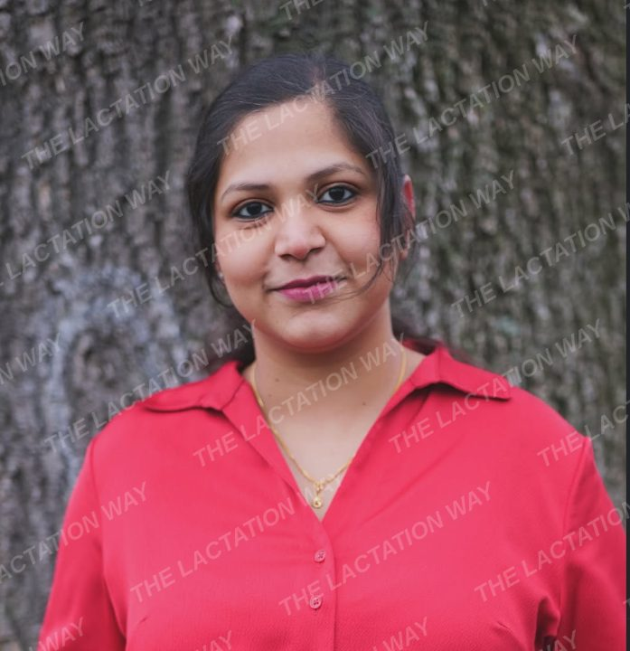

Latching difficulties
Positioning and a deep, comfortable latch. We look at a feed together and adjust step by step.
Gentle, personalized and judgment-free breastfeeding support with Neeraja. For latching, low supply, pain while feeding, or simply wondering "am I doing this right?"
Home visits in and around Berlin. Online consultations everywhere else. DMs are always open.
Breastfeeding is natural, but that does not mean it always comes easy. Each session is built around you, your baby and your goals.
Positioning and a deep, comfortable latch. We look at a feed together and adjust step by step.
We review feeds, nappies and weight together, find what is behind it and build a clear plan.
Sore or cracked nipples, engorgement and painful feeds. Feeding should not hurt, and help is available.
A calm check-in to answer your questions and confirm what is going well, so you can feed with confidence.
Message @the_lactation_way on Instagram with a short note on what is happening.
A few questions about birth, feeding so far and your goals, so the session starts with context.
At your home in and around Berlin, or online from anywhere. We observe a feed, work on what you need and agree a clear care plan.
A check-in a few days later to see how the plan is working and adjust it.
The most common question in the early days. Wet and dirty nappies are one of the best signs to watch. Expect 8 to 12 feeds in 24 hours.
General guidance for healthy, full-term babies. Your midwife, paediatrician or lactation consultant can tell you what is right for your baby.
| Baby's age | Wet nappies / 24 h | Dirty nappies / 24 h |
|---|---|---|
| Day 1 | 1 or more | 1 or more, dark and sticky |
| Day 2 | 2 or more | 1 or more, dark |
| Day 3 | 3 or more | 2 or more, turning greenish |
| Day 4 | 4 or more, pale | 3 or more, turning yellow |
| Day 5 to week 6 | 6 or more, pale and heavy | 2 or more, soft and yellow |

I'm a Certified Advanced Lactation Enabler (CALE), certified by Breastfeeding Support for Indian Mothers (BSIM), and I work as a Stillberaterin (breastfeeding counsellor) in Berlin. I support new moms through the beautiful and sometimes challenging journey of breastfeeding.
My support is gentle, personalized and judgment-free, so you can feel confident, calm and connected with your baby. Before lactation work I trained as a computer science engineer, and I bring the same clear, step-by-step thinking to every care plan.
Let's normalize the mess and the magic.
Let's normalize breastfeeding.
Advanced lactation training certified by Breastfeeding Support for Indian Mothers (BSIM). The course was designed by an International Board Certified Lactation Consultant (IBCLC).
Breastfeeding counselling supports, and does not replace, care from your midwife or doctor. Medical conditions are diagnosed and treated by medical professionals.

Any time you have a concern. Many parents book in pregnancy to prepare, and many in the first two weeks. Earlier support usually means smaller problems.
Yes, in and around Berlin. A home visit is ideal for hands-on latch support in the early days. Outside Berlin, all consultations take place online.
We meet on a video call at a time that suits you. You feed your baby as usual, and we work through latch, positioning and your questions together. You can join from anywhere.
An initial consultation usually takes 60 to 90 minutes, so there is time to observe a full feed. Follow-ups are shorter.
Fees depend on the type of session and whether it is a home visit or online. Send a DM and you will get the current prices before you book.
No. Lactation support works alongside your medical care. If something needs medical attention, you will be told and referred.
DMs are always open. Send a short message about your situation and you will get a reply with available times and next steps.